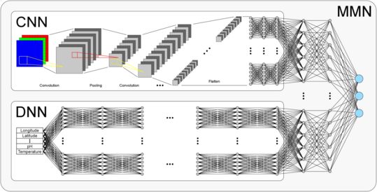
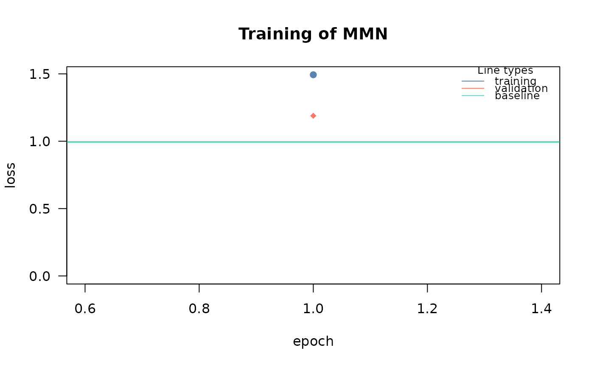
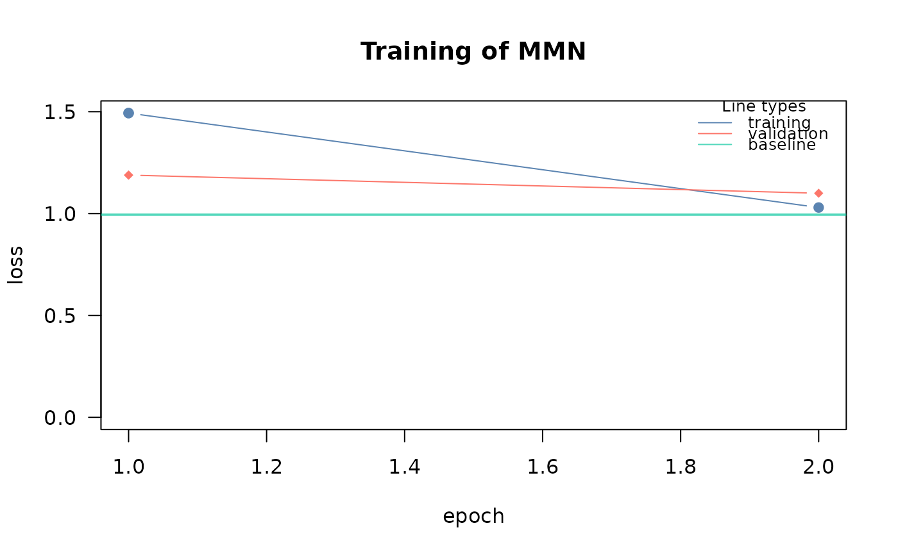
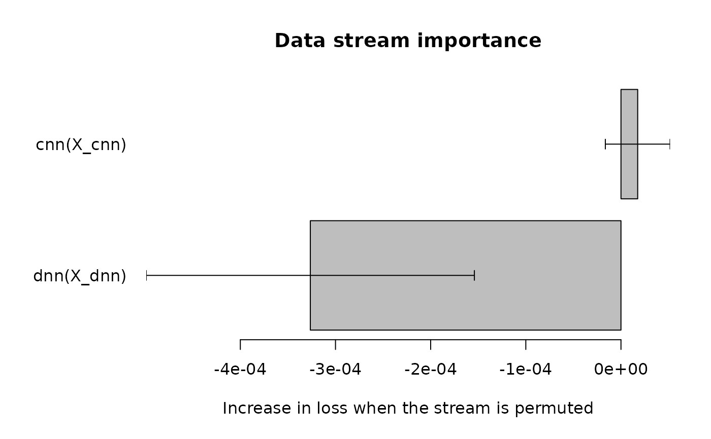
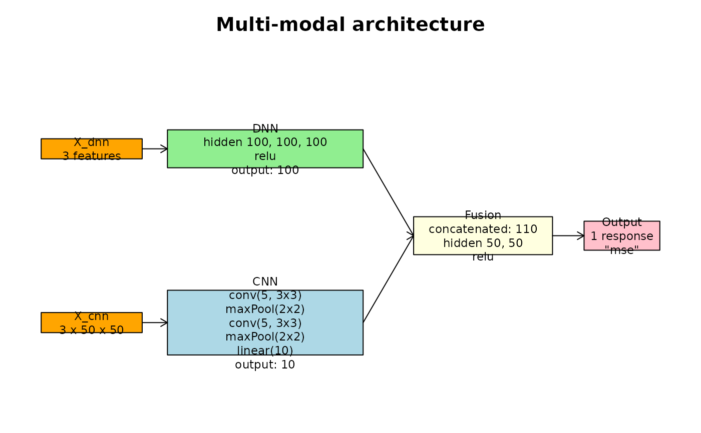

This function trains a Multi-Modal Neural Network (MMN) which consists of a combination of DNNs and CNNs.
Usage
mmn(
formula,
dataList = NULL,
fusion_hidden = c(50L, 50L),
fusion_activation = "relu",
fusion_bias = TRUE,
fusion_dropout = 0,
loss = c("mse", "mae", "cross-entropy", "bernoulli", "gaussian", "binomial", "poisson",
"mvp", "nbinom", "multinomial", "clogit", "softmax"),
custom_parameters = NULL,
optimizer = c("sgd", "adam", "adadelta", "adagrad", "rmsprop", "rprop", "ignite_adam"),
lr = 0.01,
lr_scheduler = NULL,
alpha = 0.5,
lambda = 0,
validation = 0,
batchsize = NULL,
shuffle = TRUE,
data_augmentation = NULL,
epochs = 100,
weights = NULL,
early_stopping = Inf,
burnin = Inf,
baseloss = NULL,
device = c("cpu", "cuda", "mps"),
plot = TRUE,
verbose = TRUE
)Arguments
- formula
A formula object specifying the model structure. See examples for more information.
- dataList
A list containing the data for training the model. The list should contain all variables used in the formula.
A numeric vector specifying the number of units (nodes) in each hidden layer of the fusion network. The length of this vector determines the number of hidden layers created, with each element specifying the number of units in the corresponding layer.
- fusion_activation
A character vector specifying the activation function(s) applied after each hidden layer in the fusion network. If a single character string is provided, the same activation function will be applied to all hidden layers. Alternatively, a character vector of the same length as
fusion_hiddencan be provided to apply different activation functions to each layer. Available options include:"relu","leaky_relu","tanh","elu","rrelu","prelu","softplus","celu","selu","gelu","relu6","sigmoid","softsign","hardtanh","tanhshrink","softshrink","hardshrink","log_sigmoid".- fusion_bias
A logical value or a vector indicating whether to include bias terms in each layer of the fusion network. If a single logical value is provided, it will apply to all layers. To specify bias inclusion for each layer individually, provide a logical vector of length
length(fusion_hidden) + 1, where each element corresponds to a hidden layer, and the final element controls whether a bias term is added to the output layer.- fusion_dropout
The dropout rate(s) to apply to each hidden layer in the fusion network. This can be a single numeric value (between 0 and 1) to apply the same dropout rate to all hidden layers, or a numeric vector of length
length(fusion_hidden)to set different dropout rates for each layer individually. The dropout rate is not applied to the output layer.- loss
The loss function to be used. Options include "mse", "mae", "cross-entropy", "bernoulli", "gaussian", "binomial", "poisson", "nbinom", "mvp", "multinomial", and "clogit". You can also specify your own loss function. See Details for more information. Default is "mse".
- custom_parameters
Parameters for the custom loss function. See the vignette for an example. Default is NULL.
- optimizer
The optimizer to be used. Options include "sgd", "adam", "adadelta", "adagrad", "rmsprop", "rprop", and "ignite_adam". See
config_optimizerfor further adjustments to the optimizer. Default is "sgd".- lr
Learning rate for the optimizer. Default is 0.01.
- lr_scheduler
Learning rate scheduler. See
config_lr_schedulerfor creating a learning rate scheduler. Default is NULL.- alpha
Alpha value for L1/L2 regularization. Default is 0.5.
- lambda
Lambda value for L1/L2 regularization. Default is 0.0.
- validation
Proportion of the data to be used for validation. Alternatively, a vector containing the indices of the validation samples can be provided. Default is 0.0.
- batchsize
Batch size for training. If NULL, batchsize is 10% of the training data. Default is NULL.
- shuffle
Whether to shuffle the data before each epoch. Default is TRUE.
- data_augmentation
A list of functions used for data augmentation. Elements must be either functions or strings corresponding to inbuilt data augmentation functions. See details for more information.
- epochs
Number of epochs to train the model. Default is 100.
- weights
weights or other values (can be also a matrix) that the likelihood has access to.
- early_stopping
Number of epochs with no improvement after which training will be stopped. Default is Inf.
- burnin
Number of epochs after which the training stops if the loss is still above the baseloss. Default is Inf.
- baseloss
Baseloss used for burnin and plot. If NULL, the baseloss corresponds to intercept only models. Default is NULL.
- device
Device to be used for training. Options are "cpu", "cuda", and "mps". Default is "cpu".
- plot
Whether to plot the training progress. Default is TRUE.
- verbose
Whether to print detailed training progress. Default is TRUE.
Value
An S3 object of class "citommn" is returned. It is a list containing everything there is to know about the model and its training process.
The list consists of the following attributes:
- net
An object of class "nn_module". Originates from the torch package and represents the core object of this workflow.
- call
The original function call.
- loss
An object of class "nn_module". Contains all relevant information for the loss function, e.g. parameters and a function (format_Y) that transforms target data.
- data
A list. Contains the data used for the training of the model.
- model_properties
A list of properties, that define the architecture of the model.
- training_properties
A list of all training hyperparameters used the last time the model was trained.
- losses
A data.frame containing training and validation losses of each epoch.
- best_epoch_net_state_dict
Serialized state dict of net from the best training epoch.
- best_epoch_loss_state_dict
Serialized state dict of loss from the best training epoch.
- last_epoch_net_state_dict
Serialized state dict of net from the last training epoch.
- last_epoch_loss_state_dict
Serialized state dict of loss from the last training epoch.
- use_model_epoch
String, either "best" or "last". Determines whether the parameters (e.g. weights, biases) from the best or the last training epoch are used (e.g. for prediction).
- loaded_model_epoch
String, shows from which training epoch the parameters are currently loaded in
netandloss.
MMN architecture:

The MMN combines multiple CNNs and DNNs. This allows the model to process data in different formats (e.g., DNN+CNN for tabular data and images, or CNN+CNN for images with different spatial resolutions).
The architecture of the MMN is defined by the arguments formula, fusion_hidden, fusion_activation, fusion_bias and fusion_dropout:
formulaspecifies the architecture of the individual networks as well as their respective inputs, and the target data of the MMN (which specifies the shape of the output layer).fusion_hidden,fusion_activation,fusion_biasandfusion_dropoutdefine the architecture of the DNN that fuses the outputs of the individual networks. Seednnfor details.
mmn(Y ~ dnn(X=tabular_data1) + dnn(~., data=tabular_data2) + cnn(X=image_data), dataList=mmn_data, ...)
In this example, Y (left side of ~) is the target data of the MMN. On the right side of ~ you can specify as many DNNs and CNNs as required.
The specification works exactly as in dnn and cnn with the following restrictions:
Only specify arguments that relate to the architecture and input data of the network (bold arguments mandatory):
dnn(): formula, data, hidden, activation, bias, dropout, (X, alternatively to formula and data)
cnn(): X, architecture
Arguments relating to the training (e.g. loss, lr, epochs, ...) have to be passed to mmn() instead.
The names of the data variables (in this example: Y, tabular_data1, tabular_data2, image_data) must be available in
dataList(named list).
Examples
# \donttest{
if(torch::torch_is_installed()){
library(cito)
# Example workflow in cito
device <- ifelse(torch::cuda_is_available(), "cuda", "cpu")
## Simulated data
shapes <- cito:::simulate_shapes(n=320, size=50, channels=3)
X_cnn <- shapes$data
X_dnn <- matrix(runif(320*3),320,3)
Y <- (as.integer(shapes$labels)-1)*2 + 0.5*X_dnn[,1] + 0.3*X_dnn[,2] - 0.8*X_dnn[,3]
data <- list(Y=Y, X_cnn=X_cnn, X_dnn=X_dnn)
## Architecture of the CNN
architecture <- create_architecture(conv(5), maxPool(), conv(5), maxPool(), linear(10))
## Build and train network
mmn.fit <- mmn(Y ~
dnn(~., data=X_dnn, hidden = c(100,100,100), activation = "relu") +
cnn(X=X_cnn, architecture = architecture),
dataList = data, loss = "mse",
epochs = 1, validation = 0.1, lr = 0.05, device=device)
## If the loss is still decreasing you can continue training for additional epochs:
mmn.fit <- continue_training(mmn.fit, epochs = 1)
## Predictions for new data: a list with the same names as in the formula
new_data <- list(X_cnn = X_cnn[1:5,,,,drop = FALSE], X_dnn = X_dnn[1:5,])
predict(mmn.fit, newdata = new_data)
## Output of the last hidden layer of the fusion network, e.g. for a downstream model
dim(predict(mmn.fit, newdata = new_data, return_embeddings = TRUE))
## Importance of the data streams: each stream is permuted across the samples
## and the increase in loss is what it contributes
summary(mmn.fit, n_permute = 3L)
plot(mmn.fit, n_permute = 3L)
## Architecture: one row per data stream, the concatenation, and the fusion network
plot(mmn.fit, plot_type = "arch")
## Weights and biases of all submodels
names(coef(mmn.fit)$net_parameters)
## Images can also stay on disk, see ?cnn (folder input) and ?raster_patches
## (windows cut from a large GeoTIFF); both work as data streams of mmn()
}
#> Loss at epoch 1: training: 1.493, validation: 1.189, lr: 0.05000

#> Loss at epoch 2: training: 1.030, validation: 1.100, lr: 0.05000



#> [1] "subModules.0.l_1.weight" "subModules.0.l_1.bias"
#> [3] "subModules.0.l_3.weight" "subModules.0.l_3.bias"
#> [5] "subModules.0.l_5.weight" "subModules.0.l_5.bias"
#> [7] "subModules.1.l_1.weight" "subModules.1.l_1.bias"
#> [9] "subModules.1.l_4.weight" "subModules.1.l_4.bias"
#> [11] "subModules.1.l_8.weight" "subModules.1.l_8.bias"
#> [13] "fusion.l_1.weight" "fusion.l_1.bias"
#> [15] "fusion.l_3.weight" "fusion.l_3.bias"
#> [17] "fusion.l_5.weight" "fusion.l_5.bias"
# }